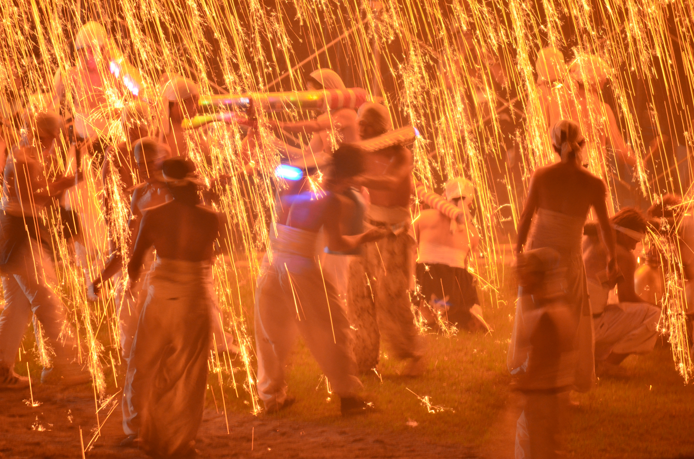

岐阜県には、美しい自然や歴史ある町並み、伝統文化を感じられる魅力的な観光地が数多くあります。世界遺産として有名な白川郷をはじめ、飛騨高山や長良川など、訪れる人々を魅了するスポットがたくさんあります。岐阜を訪れた際には、ぜひ一度足を運んでほしい場所ばかりです。このホームページでは、そんな岐阜ならではのおすすめ観光地の魅力を紹介していきます。
火祭り

詳細はこちら >
岐阜市・手力雄神社で300年以上続く「手力の火祭」。
夜空を焦がす滝花火と、火薬を仕込んだ神輿が火の粉を噴き上げる迫力は圧巻。
観客のすぐそばで炎が舞う、岐阜を代表する伝統の祭りです。
鵜飼い

詳細はこちら >
1300年以上続く岐阜の伝統「長良川の鵜飼」。
かがり火が川面を照らし、鵜匠と鵜が息を合わせて魚を追う姿は幻想的。
夏の夜を彩る、岐阜ならではの歴史手文化を体感できる伝統行事です。